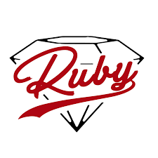

The world of computer science is simply massive, with numerous pathways and career opportunities. Programming alone is divided into a series of "languages", each with their own rules of the road, uses, and communities.
People who are new to the field of application development should pursue a specific language that they find interesting, useful to them, and/or both. Below is a partial list of programming languages, and a form to determine a good match for new programmers:
- JavaScript: JavaScript is a common programming language that is used primarily to make web pages interactive. JavaScript is extremely easy to learn, and is ready-to-use by all browsers, making setup relatively hassle-free.
- Ruby: Ruby is a general purpose, object-oriented, dynamic programming language. The language is highly popular, and is used to host world-renowned websites like Hulu, Github, and Kickstarter. The language is notable for its application testing capabilities.
- C#: C# is a combination of the pioneering C, and C++ languages. It is a compiled language, meaning that user-inputted code is converted to be machine-readible for efficiency and speed. C# is popular among videogame development communities.
Below is a quick form for you to fill out. It will calculate your answers and choose a language that best fits your interests.
You should study JavaScript!

JavaScript is great for new programmers. Below are some resources to help get you started:
- MDN (Mozilla Developer's Network) has tutorials/guides for JavaScript
- Jquery's official site contains resources for jquery, a common tool in JavaScript.
You should study Ruby!

Ruby is great for testing. You can find resources for ruby below:
You should study C#!

C# is excellent for experienced programmers! You can find resources for C# below: